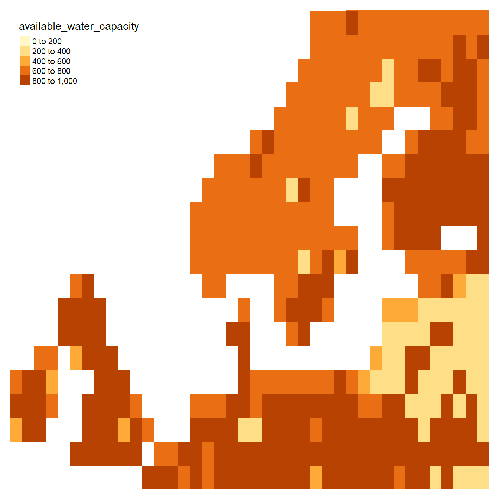

Chapter 6 Tuning Madingley to Norwegian conditions
This page was last updated 2021-12-17 15:57:16
Climate data
There are five climate data inputs:
% available_water_capacity
% near-surface_temperature
% precipitation
% ground_frost_frequency
% diurnal_temperature_rangeThey are on a monthly resolution. I’m not sure about what time period the default rasters represents, but these layers can easily be changes, or modified, to either simulate climate change or to model ecosystem structure under a different past climate to use as a referanse point in say ecological condition assesments.
Lets explore the seasonal variation in some of these datasets
temp <- sptl_inp$`near-surface_temperature`
box <- bb( xlim = c(-10,20),
ylim = c(55,65))
tm_shape(temp[[c(1,6)]], bbox = box)+
tm_raster(style = "fixed", breaks = c(-30,-10,0,10, 30)) #seq(-30,30,10))
Minusgrader i Januar (øverst) og varmegrader i juni (nederst).